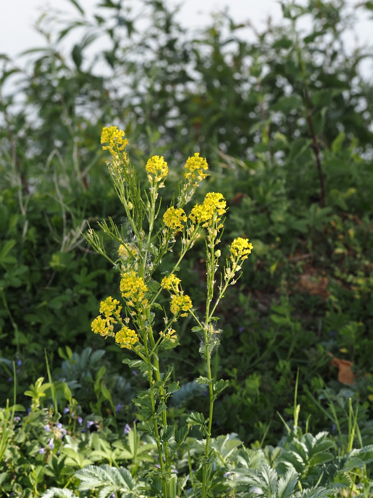

Frühlings-Gelb am Wegrand — und tatsächlich am Barbara-Tag (4. Dezember!) zu ernten.


Wintergrün durch und durch
Das Barbarakraut ist eine der wenigen heimischen Pflanzen, die im Winter grünes, essbares Blattgemüse liefern: eine Rosette, die selbst unter Schneehauben durchsteht. Daher der deutsche Name — nach der heiligen Barbara, deren Gedenktag (4. Dezember) traditionell als Erntetag galt. Die Blätter schmecken kresseartig-scharf und sind eine geniale Winter-Salat-Beilage.
Spätzünder-Strategie
Die Pflanze ist zweijährig: Im ersten Jahr nur eine bodennahe Rosette, im zweiten dann der lange Blütenstand mit den leuchtend gelben Kreuzblüten im April-Mai. Die Strategie: ungestört im ersten Jahr Wurzelreserven aufbauen, dann im zweiten richtig durchstarten und tausende Samen produzieren. Funktioniert seit Jahrtausenden.
Wissenswertes & Merksätze
Erkennen leicht gemacht
Aufrechter, oben verzweigter Stängel mit leiterartig gefiederten Grundblättern (großes Endlappen + kleinere Seitenlappen). Stängelblätter umfassend. Blüten goldgelb, vier Blütenblätter, in dichten Trauben. Schoten lang, schlank.
Wildgemüse-Klassiker
Die jungen Rosettenblätter werden im Spätwinter und Vorfrühling gesammelt — scharf-würzig wie eine Mischung aus Brunnenkresse und Senf. Reich an Vitamin C, daher früher ein traditionelles Mittel gegen Skorbut.